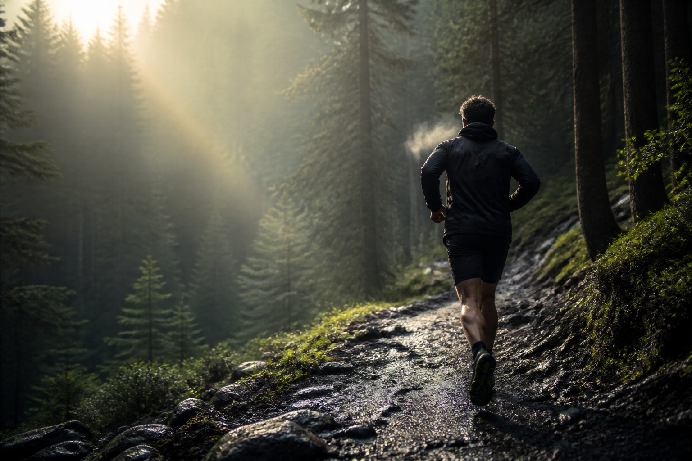

Ultra · Antwerpen
0116 yards
107,3 KM
Zestien uur lang: elk uur opnieuw 6,7 kilometer aan de start.
Mats Praast is ultraloper, HYROX-atleet, ondernemer en digitale maker. Een verhaal over grenzen verleggen, slim bijsturen en samen verder komen.
Ontdek het verhaal107,3 KM
Antwerp Backyard Ultra
1:10:56
HYROX doubles
10+ JAAR
Ondernemen in logistiek

Terrain
Off road. On purpose.
01 · Sport
Trailrunning vraagt geduld. HYROX vraagt tempo. Een backyard ultra vraagt dat je telkens opnieuw beslist om te vertrekken. Verschillende disciplines, dezelfde nieuwsgierigheid: wat gebeurt er als je blijft bewegen?
Selected challenges
Geen palmares om stil te zetten — drie momentopnames van een sporter in ontwikkeling.
Ultra · Antwerpen
01107,3 KM
Zestien uur lang: elk uur opnieuw 6,7 kilometer aan de start.
HYROX · Gent
021:10:56
Samen sterk in een format dat lopen en functionele kracht combineert.
HYROX · Mechelen
031:33:40
Een individuele test van tempo, kracht en blijven bewegen.
“Niet alles lukt meteen. Soms moet je bijsturen. De juiste mensen maken het verschil.”
Sport × Werk × Leven
Wat op een parcours werkt, werkt vaak ook daarbuiten: een groot doel opdelen, eerlijk evalueren, bijsturen en vertrouwen op de mensen rondom je.
02 · Ondernemen
Als Managing Director van Arbour Shipping Antwerp beweegt Mats dagelijks in internationale logistiek: complexe trajecten plannen, snel schakelen en samen verantwoordelijkheid nemen.
Managing Director
Shipping & forwarding
Mensenwerk
03 · Community
Presteren is persoonlijk. Vooruitgaan hoeft dat niet te zijn. Van een social 5K tot een stevige uitdaging: de beste verhalen ontstaan wanneer mensen elkaar in beweging brengen.